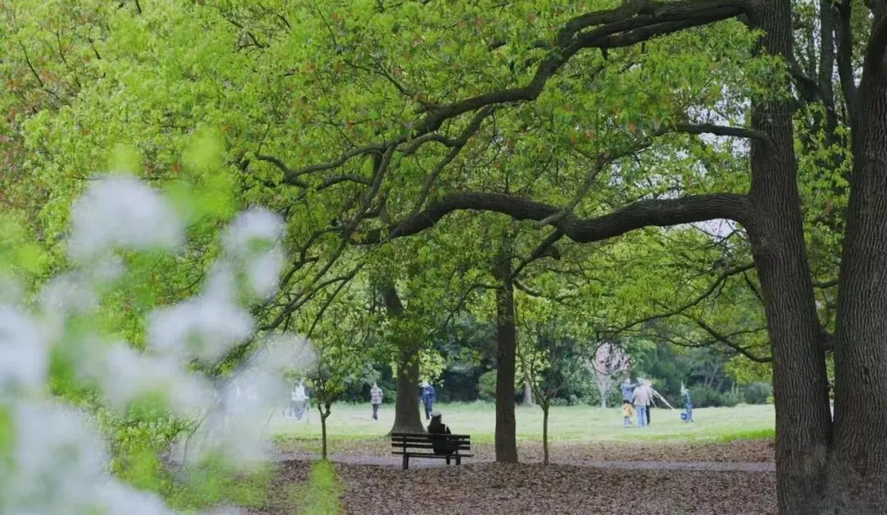
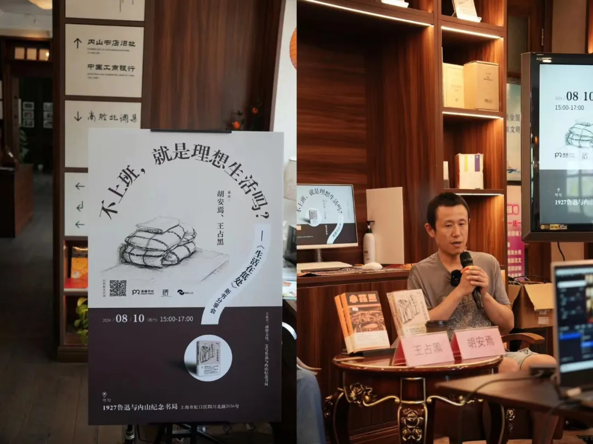
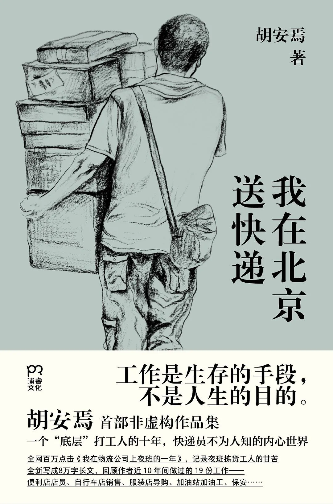
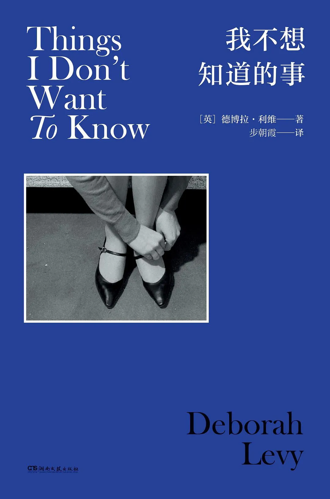
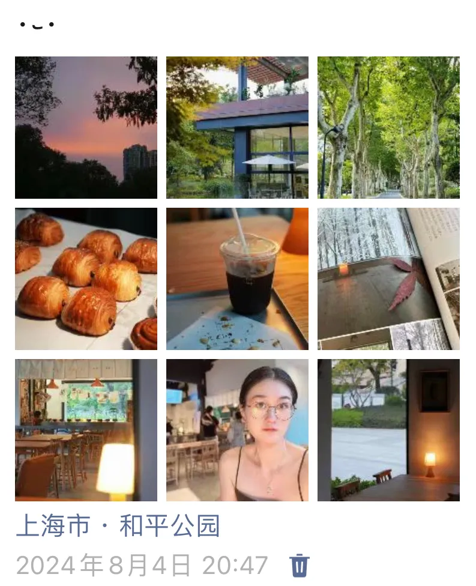

最近的生活，常有惊喜。
因为学校放暑假了，所以我终于有完整的周末时光可以自由安排，可以睡到自然醒，想去哪里就去哪里。我必须得好好珍惜这样的时刻！因此，每个周末我都选择出行，去书店、去公园，去感受活力与欲望。
在内山书局偶遇胡安焉
2024年8月10日，一个接近40度的周六。
推开内山书局的大门，一进来就意外地遇到了一张分享会海报。原来这个下午胡安焉在这里举办《生活在低处》新书分享会。前段时间在豆瓣看到了这本新书，所以有点印象，立马就报名了。

去年，看完了他写的《我在北京送快递》，确实让人记忆深刻，以至于后来几乎见到每一个快递员或外卖员，我都会想到这本书。
前些年，父亲曾在工作不那么紧忙的时候，去电镀厂对面的物流园兼职，做夜班捡货的工作。胡安焉这本书里的描述，也让我对父亲的那种夜班兼职有了具象化的想象。
也许你会问：“你为什么不自己多问问你爸，还要从别人写的书里去试图想象这种生活？”我也想过这个问题。
这大概是一种刻意的回避，在相当长的一段时间里，我无法跟父母构建起极为亲密的关系，我对于“辛劳但我无法改变、不公但我无法左右”的事物常有无力的感受，因此靠近就是一种无形的暴力，会伤害到我。从心理健康的角度来看，我需要保持安全的距离。说白了，就是我玻璃心。是啊，就是这样。

与此同时，《我在北京送快递》这本书的出版，是一个普通人被看到的故事。胡安焉的作品和经历，对我有鼓舞的作用——如果你正长期默默无闻地写作，也许有一天你的作品会被更多人看到。这激励了我继续“我手写我心”。
比较巧的是除了胡安焉新出的这本《生活在低处》，最近我还看了一本关于作家回望自己为何写作的书，那就是德博拉·利维的《我不想知道的事》。

书里德博拉·利维认为自己之所以会注定走上写作这条路，一部分是因为童年父亲消失带来的创伤，一部分是犹太人的身份，一部分是出于生活的物质所需，还有相当重要的一部分是女性主义。作家的养成，总有些共性，比如原生家庭、工作经历、内心世界的感知，审美的方式等等。区别可能会在于，有些是向内的探寻与表达，有些是对现实的批判与表达。这两者，都令我着迷。
我们的人生大部分都是平凡的，所以胡安焉的文本更容易引起人们的共情。而他努力找到安宁与平和的心路，也让人看到焦虑之外的另一种可能性。好像也是在告诉你，如果一个人不适应社会，那他即使是出于逃避的心态走向写作，也是可以平安活着，寻得片刻安宁的。
当然，他身为男性，总会缺乏一些女性视角。如果是一个平凡的女性，生活会怎样呢？能够因为内在的驱动力而写作吗？大概会在每一段短暂的工作间隙里，被家人和非家人密集催婚催育吧。大概也会遇到这种言论：“你想写作？可以啊，找个人嫁了吧，在家带娃与写作咯。”
这种话看上去逻辑很通顺，但是又很可笑。胡安焉自己都清晰地表示，自己很难在一段时间里同时兼顾工作与写作，因为他很难静下心来。难道育儿就比工作简单吗？育儿是一项集成了大量显形劳动与隐形劳动的复杂工程，它远远不比在经济社会中的常见工作简单。并且它还需要大量的情绪付出，这种情绪劳动难道就不影响阅读与写作吗？
能够提出这种言论的人，大概是无法理解隐形劳动与情绪劳动的繁重，以及对人的磨损吧。
生活常有联系，处处均有共振。前一天我在《随机波动》的播客里听周轶君讲到在法国（没记错的话）认识的一个普通园艺工人对哲学的珍视，ta 认为哲学让自己能够更好地思考工作与生活，拥有了精神的世界，得以安置自己，获得幸福。胡安焉就好像这样一个人，虽然做着普通的工作，以体力劳动为主，但与此同时他仍然保有观察与思考的习惯，以文学浇灌精神世界，并且长期的写作练习也让他逐渐形成了表达的能力。
可惜的是我们身边大部分的体力劳动者，难以习得觉察与表达的技能。这当然有相当大的一部分原因是，我们青春期的教育体系内，缺少了哲学的部分，缺少了觉察内心的训练。工具理性，占据上风。而工具理性告诉我们，阅读、写作与思考，若难以直接带来经济回报，就好像是浪费时间的。
这个新书分享会的观众交流提问环节，有一个男读者说，自己也是一个写作者，写了7-8年的日记，也有希望自己的作品能够发表的美好愿望，因此想知道已经出版了作品的作家老师们，是怎样区分有效的写作素材的？什么样的体验和记录会作为写作的范畴？平时有写日记的习惯吗？是怎样做写作规划的？
可惜的是现场的两位作家都没有给出他想要的回答，他们都是更加经验和表达欲驱动型的作者，不会做很严格的文本筛选、写作策划，因此没办法为这个读者提供一种清晰的有迹可循的写作路径的参考。这个读者的提问是一种很职业化的思路，把写作当作是一件严谨的、可规划可筹谋的事情。但是这样的作家有多少呢？有时候写作，就是需要一些感性的偶然。
这也引起我对自己写作的思考。曾经我也妄想制定并执行严密的写作计划，但是后来发现这太难了。它毕竟不是一个受到外部力量制约和规范的工作，它是一项由内而外的表达。完善自我的作用甚至会高于外部反馈。我甚至都没有进行创意写作或非虚构文本的训练，完全凭借着习惯在写东西，甚至也没有模仿过谁。欧，我可真是业余啊，比这个提问者差远了。
但这一天的偶遇，是棒极了。
在和平公园偶遇生活
2024年8月4日，一个接近40度的周日。
我独自来了和平公园的大隐书局，果然这是一个适合聊天的环境宜人的地方，但并不适合阅读，书品以杂志为主，感觉更像是一个杂志主题的茶餐厅。
它与和平书院的区别在于，前者在公园中间，依湖而落，后者在草坪边，靠近马路，且后者的二楼有免费的自习区与大量书架，书籍可借阅。前者几乎是一个纯粹的商业空间，一个模仿着莫奈的睡莲风格的湖景餐厅。
好在咖啡不难喝。我在这里用大概2小时看完了一本《秋刀鱼》。这是一本专门分享日本生活的台湾独立杂志。这一期的主题很应景，讲的是伴随着东京等大都市的日益拥挤，政府开始出台一些政策吸引人们去往东京周边的小城市或乡郊生活，与此同时远程办公与居家办公的可能性增加，因此有不少人开始两地生活，于是杂志采访了几对家庭，分享这些创意人士是如何离开东京，又是如何开启两地或三地的生活方式的。
内容正好对应前一天晚上听的那期《东亚观察局》。这期播客从大地艺术节聊到中日两国的城市与农村更新。在日本生活多年的赵慧提到，虽然日本和中国都有少子化、老年化、农村空心化，但是日本和其他发达国家的城镇化跟中国不一样的一点是，前者的农村在城市化的过程里，生活水平和物质条件都提升了一个台阶，跟城市差异不那么大，这些年日本政府也在各种想办法让人们去农村，做各种吸引人的举措。但是中国发展得太快了，城镇化的过程里，农村还没来得及跟上城市的发展——改善基础设施，提高生活物质条件等，就已经出现人越来越少的情况。所以现在农村想吸引人过去，也有很大难度，要做很多补足。
在这一期《秋刀鱼》里，我看到有一对儿伴侣从东京搬到了镰仓后，一天的作息表是怎样的。其中一个下午的时间段是去健身房和蒸桑拿。我就想到，在安徽的农村哪有多少有健身房和桑拿室之类的设施呢，倒不是说健身房和桑拿室就有多么好，而是感受农村与城市之间的不同。但日本的农村与城市之间的断层并没有那么大。
近些年，中国无论是一线城市还是二线城市，都有开始做“城市更新”的项目，比如合肥前几年有将合柴改造成创意园，今年靠近1912街区的新粮仓也刚开业。农村焕新、城市更新，应该也会成为中国的一种趋势吧，也许江浙沪与南方地带会探索得更早一点，但整体还是道阻且长，国情差异还是挺大。
到了傍晚，太阳下山，温度不再那么难以忍受，附近的居民从四面八方涌入和平公园。我在公园里闲逛，看莲花，看散步的老人，然后在湖边偶遇了一家咖啡店，叫一尺之间，这是一尺花园的分店之一，四点之后就有面包五折的优惠，店里播着程璧的歌儿。不得不说，一尺之间与程璧的气质可太搭调了，轻快的民谣小调与木质的桌椅、温馨的台灯、绿色的湖畔，完美契合。离开这间店的时候，看到了橙色的晚霞，逐渐变成粉紫色的天空。这一切都让我惊叹。

是好久好久都没有感受到的松弛了！虽然我已经很久没有听过程璧的歌，但是我当下突然发现：啊，自己还是很爱这个小清新的调调啊，跟当年那个文艺矫情的听民谣的大学生一样。
说到底，这间店，其实本身没有多么特殊。我偶遇这间店和落日的这件事情，其实也没有多么特殊。在上海有很多很多这样的店，也有很多个美好的公园，天气好的时候，落日都会很美。
但是这种惊喜的感受，让我对自己有了新的认识——我很久没有在日常生活中收获意外的喜悦了。我意识到自己在互联网行业工作的这几年，对于生活领域探寻的视野变窄小了很多，不再看杂志，不再拥有闲暇。在和平公园的这一天，让我找回了曾经从银行辞职后的那一年轻松的状态。我发现自己还是喜欢杂志，喜欢散漫，喜欢无用之物。这一天，有似曾相识的味道。
这几年对于生活的热爱程度真的下降了很多！心思都放在如何精进自己上了。严格的学习计划、努力精进的想法，把自己放在越来越深厚的外壳下，活在冰冷的、干净的写字楼里，很久没有在溽暑里出汗，在公园里偶遇些什么东西了。
这天晚上，我在日记里告诉自己：接下来，请多多感受、关注生活吧！去热爱、去体验，不要对自己施加太多反消费主义的意义审判。去舒舒服服地生活。
其实过去有相当多时候——别人说我的生活很小资的时候，我会有点羞耻感，觉得这好像是一种贬义。而且我会常常觉得，自己好像过得比父母更好，对此有种不配得感。好像，享受，让人羞耻。因此以前有相当多感到愉悦的时刻，我很想分享，但都选择不发朋友圈，觉得好像有点不齿。
但现在，我好像稍微淡然了一点。这就是我真实的生活，仍然是简朴居多，也认真感受能够让自己得到愉悦的东西。愉悦的时候，想记录就记录，想分享就分享——这都是自然的反应。不要总是审判自己是不是没经受住消费主义的诱惑，是不是徒有形式，是不是陷入了符号化的仪式里。
承认自己就是有欲望，消费的欲望，寻求物质享受的欲望，想舒服活着的欲望。
过度审判，让人的精神世界太过紧张。今年以来，我对自己的审判，少了一些，但还不够。得继续认识自己，感受闲暇啊～
嗯，赞美闲暇！